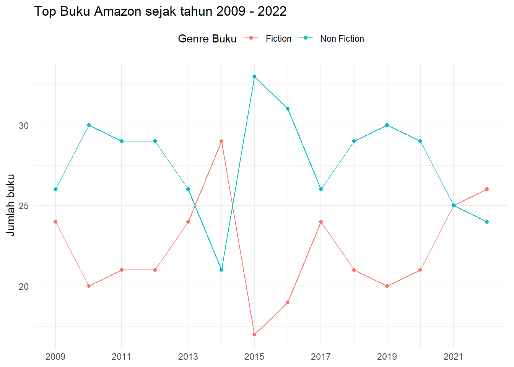
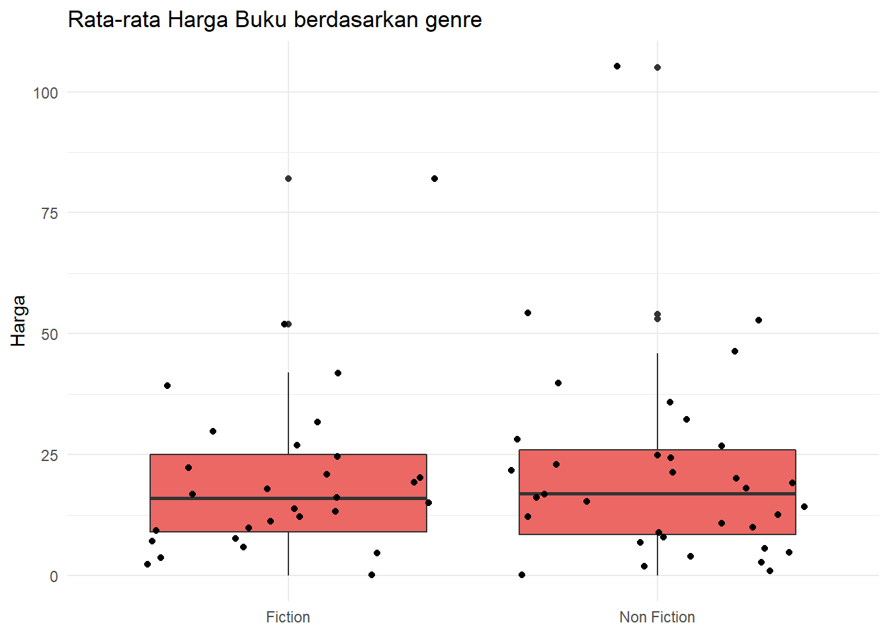
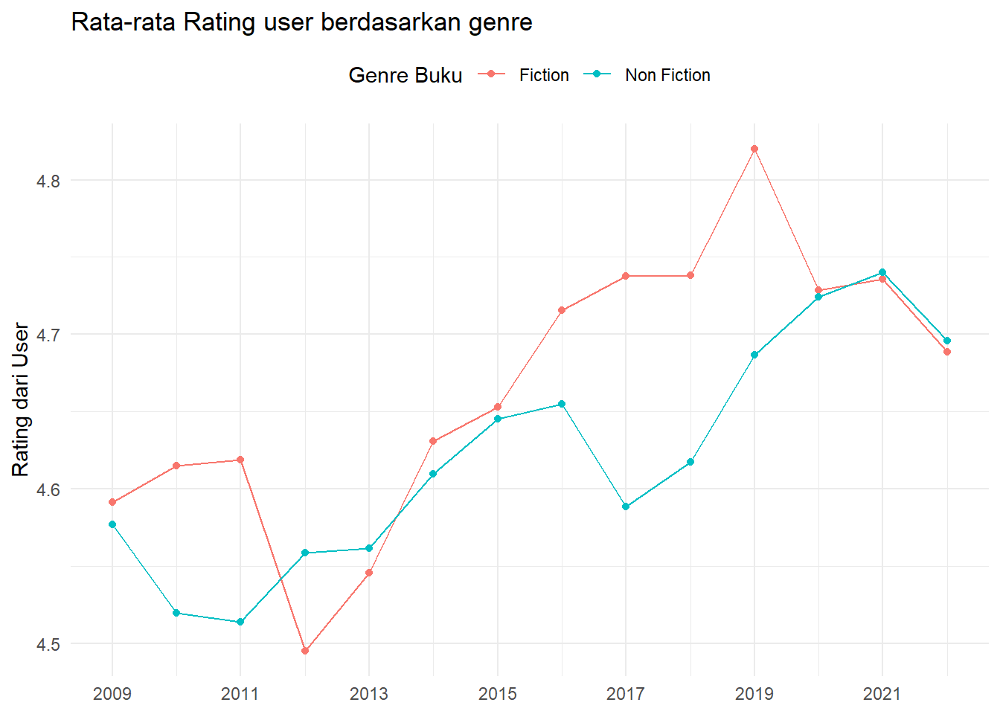

1. About Dataset
1.1 Context
Dataset yang digunakan yaitu Amazon berisi Top 50 buku
yang banyak terjual (Best Selling).Data terdiri dari tahun 2009
sampai tahun 2022.
1.2 Content
Data terdiri dari :
Name : Berisi Judul bukuAuthor : Berisi nama pengarang bukuUser Rating : Rata-rata rating dari pembaca untuk buku
(dari 5 bintang)Reviews : Banyaknya buku yang di reviewPrice : Harga Buku (yang dibulatkan)Year : Tahun BukuGenre : Tipe Buku
3. Data Explanation
## Name Author User.Rating Reviews
## Length:700 Length:700 Min. :3.30 Min. : 37
## Class :character Class :character 1st Qu.:4.50 1st Qu.: 4987
## Mode :character Mode :character Median :4.70 Median : 10284
## Mean :4.64 Mean : 19255
## 3rd Qu.:4.80 3rd Qu.: 23358
## Max. :4.90 Max. :208917
## Price Year Genre
## Min. : 0.0 Min. :2009 Fiction :312
## 1st Qu.: 7.0 1st Qu.:2012 Non Fiction:388
## Median : 11.0 Median :2016
## Mean : 12.7 Mean :2016
## 3rd Qu.: 15.0 3rd Qu.:2019
## Max. :105.0 Max. :2022
Rata-rata Rating untuk setiap Genre ?
aggregate(formula=User.Rating~Genre,data=amazonBook,FUN=mean)
Rata-rata harga buku setiap genre ?
aggregate(formula=Price~Genre,data=amazonBook,FUN=mean)
Total Reviews dari tiap Genre buku ?
xtabs(Reviews~Genre, amazonBook)
## Genre
## Fiction Non Fiction
## 7498641 5979996
4. Data Manipulation
Kita ingin mengetahui buku Fiction dengan user rating tertinggi di
tahun 2012
amazonBook[amazonBook$Genre == 'Fiction' & amazonBook$User.Rating == max(amazonBook$User.Rating) & amazonBook$Year == "2012",]
Mencari buku dengan harga dibawah rata-rata dengan genre Non
Fiction
head(amazonBook[amazonBook$Price < mean(amazonBook$Price) & amazonBook$Genre == "Non Fiction",])
Buku Fiksi yang memiliki rating rendah?
amazonBook[amazonBook$Genre == 'Fiction'& amazonBook$User.Rating == min(amazonBook$User.Rating),]
Penjelasan :
- Data ini terdiri dari 700 data Top Buku yang dijual di Amazon Book
dari tahun 2009 sampai 2022.Buku yang dijual memiliki 2 Genre yaitu
Fiksi dan Non Fiksi.
- Rating terendah sebesar 3,3 dan rating buku tertinggi sebesar
4.9.
- Harga buku terendah sebesar $ 0 dan tertinggi sebesar $ 105.
- Buku Fiksi terdapat 312 buah dan mendapatkan rata -rata rating dari
pengguna sebesar 4,66.Sedangkan buku Non Fiksi terdapat 388 buah dan
mendapatkan rata -rata rating dari pengguna sebesar 4,62.
- Rata-rata harga buku fiksi yang direview sebesar $ 10,6 dan buku non
fiksi sebesar $ 14,3.
- Total buku yang sudah di review sebesar 7,498,641 dengan genre
fiksi.
- Buku Fiksi dengan rating rendah diduduki oleh The Casual
Vacancy dengan rating 3,3.
5. Visualisation
Count_book <- amazonBook %>%
group_by(Genre,Year) %>%
summarise(count = n()) %>%
ungroup() %>%
arrange(Year)
## `summarise()` has grouped output by 'Genre'. You can override using the
## `.groups` argument.
ggplot(Count_book, aes(x = Year, y = count ,colour = Genre))+
geom_line()+
scale_x_continuous(breaks = seq(2009, 2022, by = 2))+
geom_point()+
labs(title = "Top Buku Amazon sejak tahun 2009 - 2022",
x = NULL, y = "Jumlah buku",
color = "Genre Buku")+
theme_minimal()+
theme(legend.position = "top")

Penjelasan :
- Dapat dilihat pada grafik menunjukan buku Fiksi lebih memiliki
sedikit jumlah buku pada tiap tahun dibandingkan buku Non fiksi.
- Buku Fiksi dan Non fiksi pada tahun 2021 memiliki jumlah buku yang
sama yaitu sebesar 25 buah buku.
Mean_book <- amazonBook %>%
group_by(Genre, Price) %>%
summarise(mean = mean(Price)) %>%
ungroup() %>%
arrange(Price)
## `summarise()` has grouped output by 'Genre'. You can override using the
## `.groups` argument.
ggplot(Mean_book, aes(x = Genre, y = Price))+
geom_boxplot(fill = "#eb6864")+
geom_jitter()+
theme_minimal()+
labs(title = "Rata-rata Harga Buku berdasarkan genre",
x = NULL, y = "Harga",
color = "Genre Buku")+
theme_minimal()

Penjelasan :
- Terdapat outlier/nilai ekstrim di bagian atas boxplot fiksi dan non
fiksi dsertai bagian whisker bagian atas lebih panjang daripada whisker
bawah.
- Dapat dilihat pada bagian non fiksi letak garis median pada box
terletak tepat ditengah box.
mean_ratings <- amazonBook %>%
group_by(Genre,Year) %>%
summarise(mean = mean(User.Rating)) %>%
ungroup() %>%
arrange(Year)
## `summarise()` has grouped output by 'Genre'. You can override using the
## `.groups` argument.
ggplot(mean_ratings, aes(x = Year, y = mean ,colour = Genre))+
geom_line()+
scale_x_continuous(breaks = seq(2009, 2022, by = 2))+
geom_point()+
labs(title = "Rata-rata Rating user berdasarkan genre",
x = NULL, y = "Rating dari User",
color = "Genre Buku")+
theme_minimal()+
theme(legend.position = "top")

Penjelasan :
- Dilihat dari grafik diatas bahwa user memberikan rating buku fiksi
dari tahun 2011 ke 2012 mengalami penurunan.Kemudian rating mengalami
peningkatan dari tahun 2013 sampai tahun 2019 sebesar kurang lebih
4,8.
- Dibandingkan grafik rating user fiksi ,pada buku non fiksi mengalami
peningkatan pada besarnya user raring di tahun 2021.
mean_review <- amazonBook %>%
group_by(Genre,Year) %>%
summarise(Mean = mean(Reviews)) %>%
ungroup() %>%
arrange(Year)
## `summarise()` has grouped output by 'Genre'. You can override using the
## `.groups` argument.
ggplot(mean_review, aes(x = Year, y = Mean ,colour = Genre))+
geom_line()+
scale_x_continuous(breaks = seq(2009, 2022, by = 2))+
geom_point()+
labs(title = "Rata-rata Review berdasarkan genre",
x = NULL, y = "Review",
color = "Genre Buku")+
theme_minimal()+
theme(legend.position = "top")

Penjelasan :
- Dilihat dari pergerakan grafik jumlah review buku meningkat secara
kompak untuk buku genre fiksi dan non fiksi di tahun 2020.